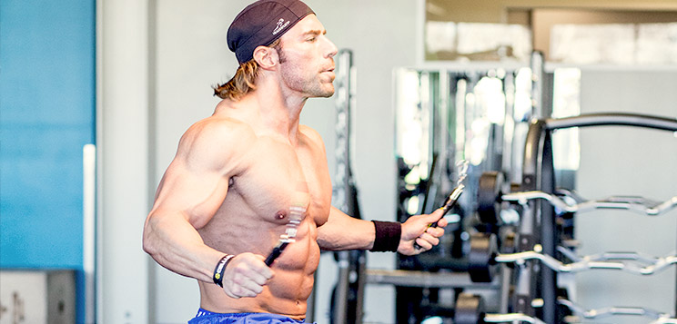
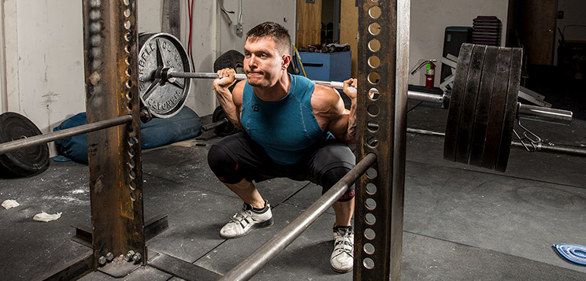
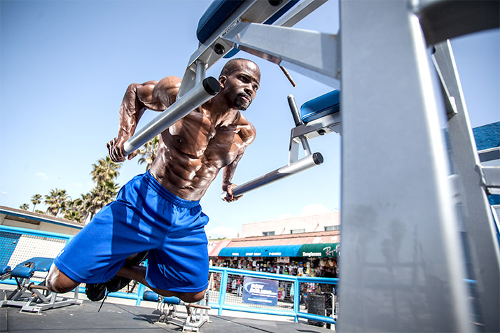

Welcome to the Bodybuilder.com

Please select one plan to begin your bodybuilding training
For killer six pack abs
Click here to watch full plan

World's best online Bodybuilding training site

Arnold's Bodybuilding : All the time greatest
Click here to watch full page

Many of us have fuzzy visions of our future. Even as adults, we often struggle to decide who we want to be, what we want to do, and what kind of blueprint we want to leave behind. Arnold Schwarzenegger, however, knew from a young age exactly who he wanted to become. He wanted not to be a great bodybuilder, but the very best. He visualized it, he worked for it, and he actualized it.
This is how Arnold turned dreams into reality. Follow in his footsteps, learn from his hard work, and build your own legacy.
When it comes to bodybuilding, Arnold Schwarzenegger knows best. His plan for quality mass and extreme strength isn't complicated. In fact, it's steeped in the fundamentals and old-school exercises that should be at the heart of everyone's program. It's a surefire road to growth, but it's fraught with pain and struggle. If you want to learn bodybuilding from the world's best bodybuilder, you're in the right place.
10 best chest exercises
Click here to watch full page

POWER UP WITH PLANTS!
Choose the options that best support your health and fitness goals.

Contact us
+923351456232
+923327017794
Address:-
C-2 Johr Town Near UMT, UMT Road
Lahore
Mail
13022020137@umt.edu.pk,
13022020132@umt.edu.pk